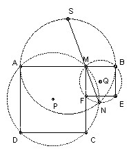

An arbitrary point M is taken in the interior of the segment AB. Squares AMCD and MBEF are constructed on the same side of AB. The circles circumscribed about these squares, with centers P and Q, intersect at M and N.
(a) prove that AF and BC intersect at N;
(b) prove that the lines MN pass through a fixed point S (independent of M);
(c) find the locus of the midpoints of the segments PQ as M varies.
Solution

(a) ∠ANM = ∠ACM = 45o. But ∠FNM = ∠FEM = 45o, so A, F, N are collinear. Similarly, ∠BNM = ∠BEM = 45o and ∠CNM = 180o - ∠CAM = 135o, so B, N, C are collinear.
(b) Since ∠ANM = ∠BNM = 45o, ∠ANB = 90o, so N lies on the semicircle diameter AB. Let NM meet the circle diameter AB again at S. ∠ANS = ∠BNS implies AS = BS and hence S is a fixed point.
(c) Clearly the distance of the midpoint of PQ from AB is AB/4. Since it varies continuously with M, it must be the interval between the two extreme positions, so the locus is a segment length AB/2 centered over AB.

Solutions are also available in: Samuel L Greitzer, International Mathematical Olympiads 1959-1977, MAA 1978, and in István Reiman, International Mathematical Olympiad 1959-1999, ISBN 189-8855-48-X.
1st IMO 1959 home
© John Scholes
jscholes@kalva.demon.co.uk
17 Sep 1998
Last corrected/updated 28 Nov 2003